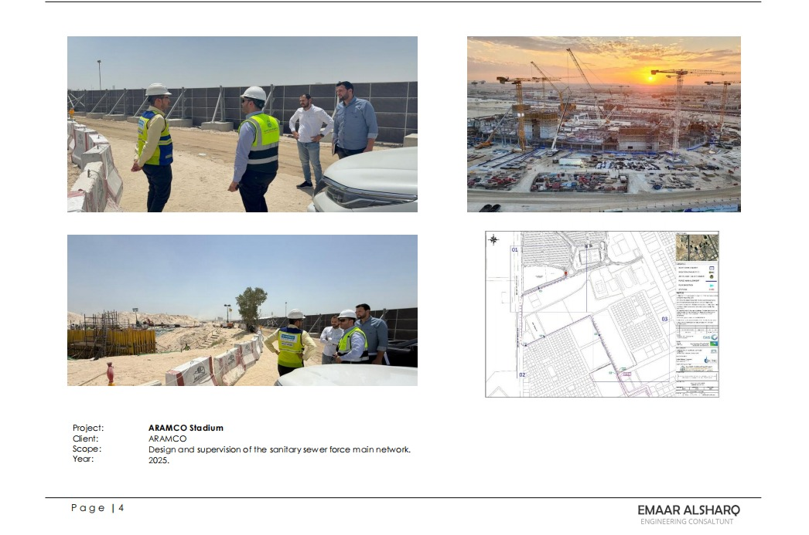
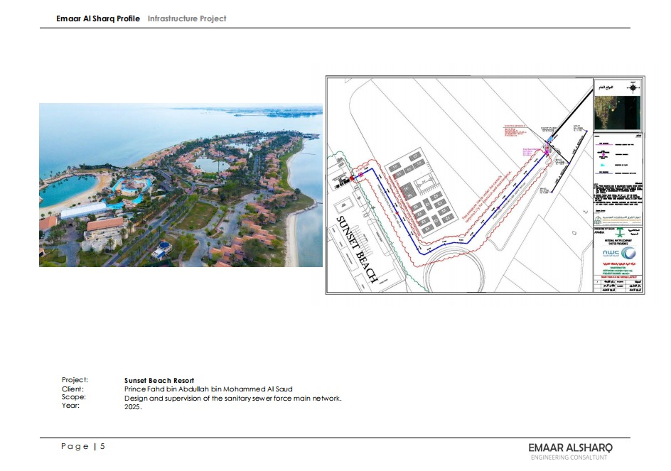
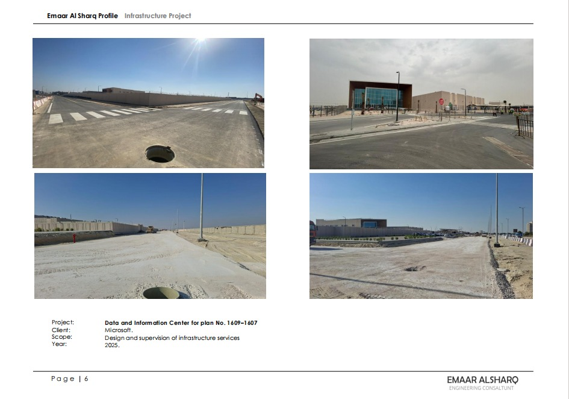
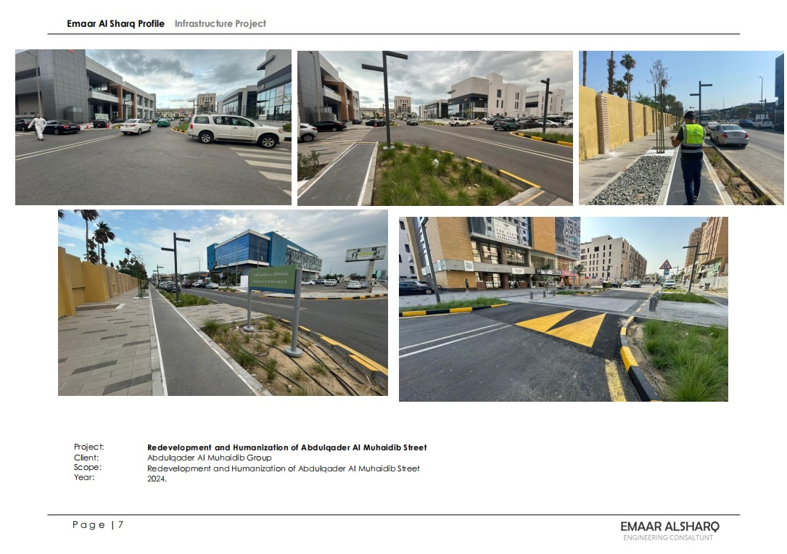
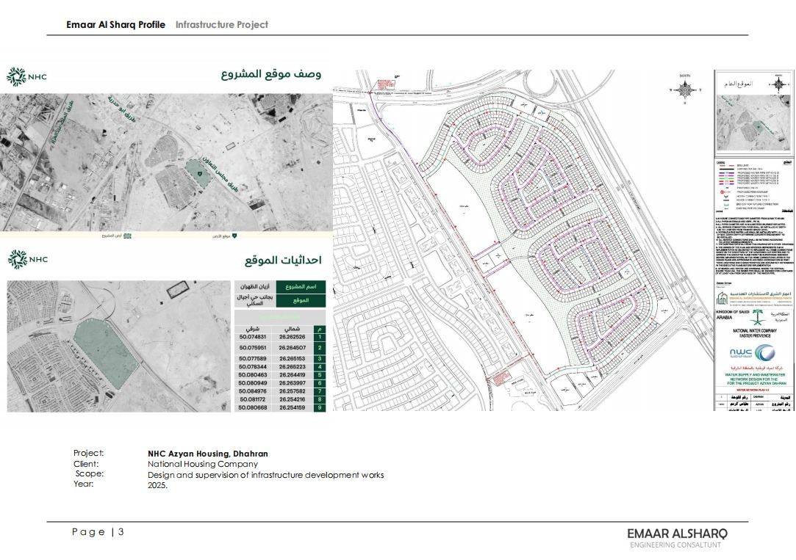

2025
ARAMCO Stadium
مشروع بنية تحتية لخدمة استاد أرامكو، شمل أعمال التصميم الهندسي والإشراف الميداني على شبكة الصرف الصحي الرئيسية، مع متابعة جودة التنفيذ والتنسيق مع متطلبات الموقع.
أعمالنا السابقة
مجموعة مختارة من مشاريع اعمار المشرق في التصميم، الإشراف، تطوير البنية التحتية، وتحسين جودة المواقع والخدمات.
المشاريع

مشروع بنية تحتية لخدمة استاد أرامكو، شمل أعمال التصميم الهندسي والإشراف الميداني على شبكة الصرف الصحي الرئيسية، مع متابعة جودة التنفيذ والتنسيق مع متطلبات الموقع.

تطوير حلول البنية التحتية الخاصة بشبكة الصرف الصحي للمنتجع، مع إعداد المخططات ومراجعة المسارات والإشراف على متطلبات التنفيذ بما يتناسب مع طبيعة الموقع الساحلي.

أعمال استشارية لبنية تحتية داعمة لمركز بيانات ومعلومات، تضمنت دراسة الخدمات والممرات والمواقع المحيطة، مع متابعة متطلبات السلامة والجودة أثناء التنفيذ.

مشروع تحسين حضري يركز على رفع جودة تجربة المشاة والمركبات، وتحسين المشهد العام عبر أعمال الأرصفة، المسطحات الخضراء، تنظيم الحركة، ومعالجة عناصر الطريق.

أعمال تطوير بنية تحتية لمشروع أزيان السكني في الظهران، شملت دراسة الموقع، إعداد المخططات، ومتابعة خدمات البنية التحتية لضمان جاهزية المشروع للتنفيذ.